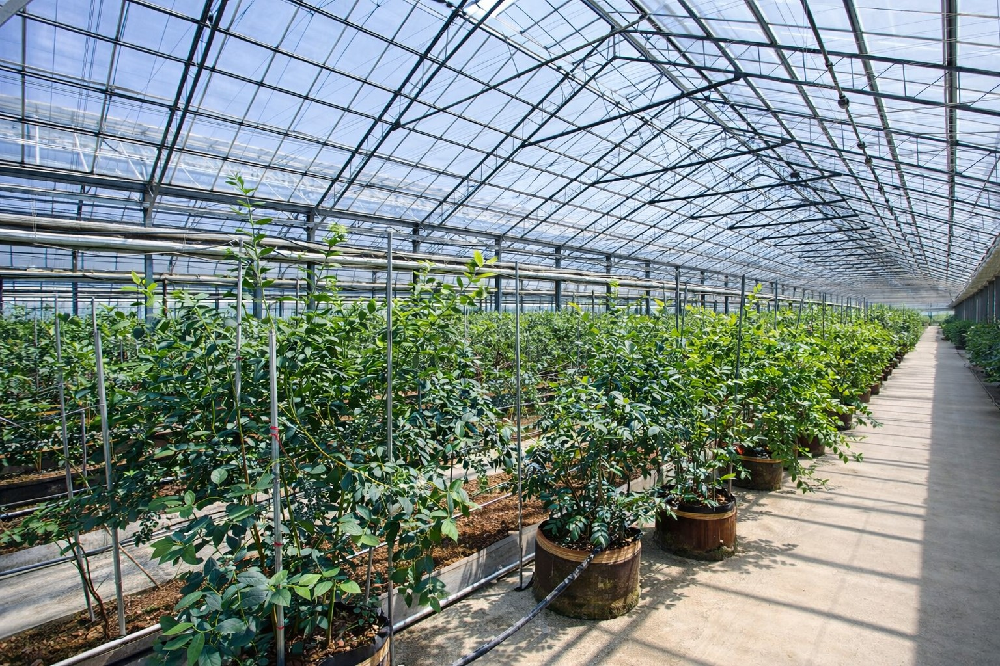
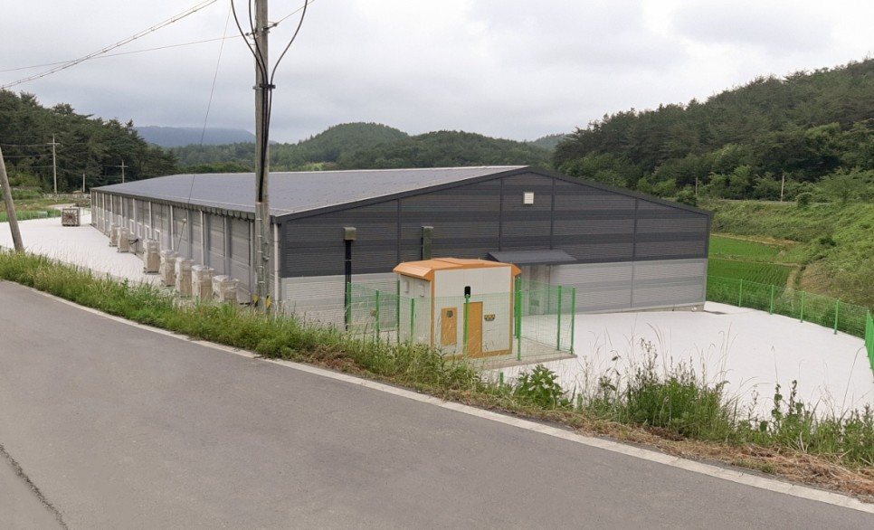
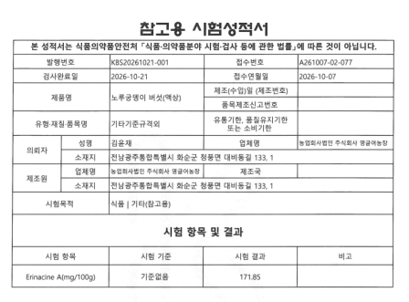
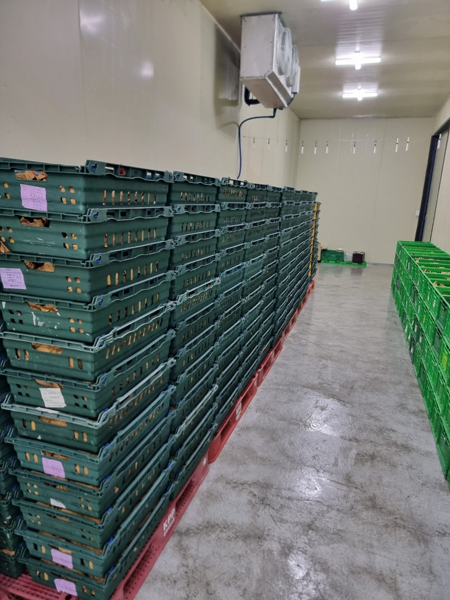

Rooted in farming.
Growing through research.
From growing our own fruit and mushrooms to exploring compounds and developing food ingredients, our work connects the field with food innovation.
Growing food. Understanding its possibilities.
Founded in 2008, Young Grower Farm has expanded from cultivation and distribution into food processing, mushroom culture and ingredient research. Our direction connects health, the study of useful compounds and the development of food ingredients.
Cultivation
Experience growing blueberries, Seola peaches and mushrooms grounds our understanding of raw materials.
Processing
Freeze-drying, milling and concentration turn agricultural ingredients into foods and new formats.
Research
Compound analysis and mycelium culture inform ingredient development and future research.
Fruit. Mushrooms. Bio Research.
Explore the production base, processing experience and products behind each business.

Fruit
We grow and distribute blueberries and Seola peaches, then extend their use through freeze-dried fruit chips and fruit powders. Our processing portfolio combines our own fruit with selected purchased ingredients.
Explore this sector
Mushrooms
We produce and distribute sanghwang mushrooms, cordyceps and lion’s mane. Cultivation and processing experience leads to mushroom rice, extracts and Mush Rice Chips.
Explore this sector
Bio Research
Our research grows out of mushroom cultivation. We study compounds including beta-glucan, cordycepin and erinacines, connecting production and analysis with health-oriented foods and ingredient development.
Explore this sectorBuilt through hands-on experience.
Our development has been supported by farms, processing facilities and a dedicated research organisation.
Farming begins
The first glasshouse farm opened with the agricultural business.
Distribution grows
Direct supply to retail partners expanded alongside additional farming infrastructure.
Food processing
A food-processing plant was established.
Research institute
A company research institute was established.
Mushroom infrastructure
A mushroom cultivation facility was completed and the processing plant expanded.
New food formats
Bowigang mushroom foods, fruit chips and Mush Rice Chips broadened the portfolio.
A connected base for production and research.
Our farms, mushroom cultivation facility, food-processing plant and sorting and logistics centre support work across all three sectors.

Farms in Hwasun & Icheon
Glasshouse and open-field fruit cultivation provides experience with crops and their production environments.
Mushroom facility · Hwasun
A 1,504 m² facility supports mushroom production and mycelium culture.

Food-processing plant · Hwasun
A 518 m² HACCP processing facility with freeze-drying, fine milling and liquid-concentration equipment.

Sorting & logistics · Daejeon
A 986 m² centre connects fruit sorting with distribution and dispatch.
A basis for informed collaboration.
Cultivation technology, compound analysis and processing infrastructure support the way we develop food ingredients and products.
Brown-rice-based mycelium culture
Our technical foundation includes a patented method of cultivating medicinal mushroom mycelia on a brown-rice-based medium. Analysis work includes erinacine A, cordycepin and beta-glucan. Reports describe the tested samples and can be reviewed alongside product-specific requirements.
Explore our researchTwo starting points for product discussions.
Freeze-dried fruit chips and Mush Rice Chips are the principal products for overseas buyer discussions. Our wider portfolio shows the production and research experience behind them.

Freeze-dried fruit chips
Blueberry and peach made with our own fruit; mandarin and strawberry made with purchased fruit.

Mush Rice Chips
Brown rice chips containing mushroom rice, developed from our mushroom and grain-food experience.
Explore a partnership with Young Grower Farm.
For supply enquiries, tell us your product of interest, target country, distribution channel, packaging needs and expected volume. For ingredient or research collaboration, share the intended application and specifications.
- goready@empas.com
- International enquiries
- +82 10-9356-6046 · Director Lee Seong-hee
- Main office
- +82 61-373-0969
- Address
- 133, Daebidong-gil, Cheongpung-myeon, Hwasun-gun, Jeollanam-do, Republic of Korea
- Office hours
- Weekdays 09:00–18:00 KST · Lunch 12:00–13:00